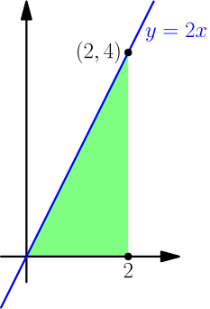
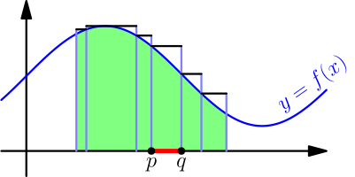
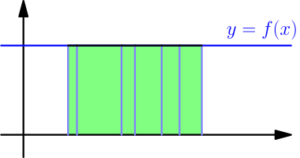
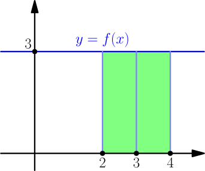
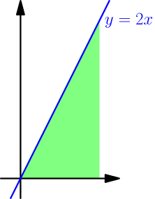
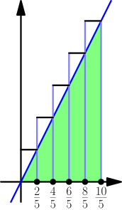
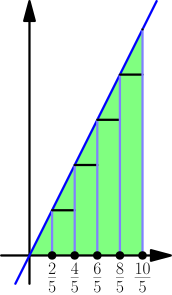
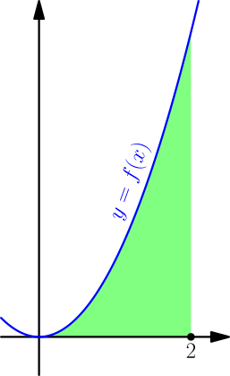
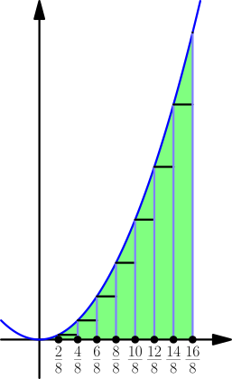

Introduction to Integrals¶
An integral of a function $f$ on an interval $[a,b]$ means the area under the graph of $f$ between $a$ and $b$. In the below picture, it is the area of the green part.
Integrating $f$ means calculating the integral of $f$. Also, "integral from $a$ to $b$" means "integral on $[a,b]$". The notation $$ \int_a^b f(x)\ dx $$ means the integral of $f$ from $a$ to $b$. (I'll explain later why there's $dx$ after the function being integrated.)
For example, $\int_0^2 2x\ dx$ represents an area under the line $y=2x$. It looks like this:

Because this is a triangle with base $2$ and height $4$, we can use the triangle area formula (TODO) to get $$ \int_0^2 2x\ dx = \frac{2 \cdot 4}{2} = 4. $$ In practice, we usually don't use area formulas to calculate integrals, but quite the opposite; once we have a good way to calculate integrals, we can use that to calculate areas that we otherwise couldn't calculate.
So far we haven't defined what exactly area means, and it hasn't bothered us too much. But for doing integrals, defining what exactly we mean with the "area" under a graph is worth the effort, so soon we'll define the integral properly. We'll also discuss whether all functions can be integrated.
Partition¶
Let's split the interval $[a,b]$ into finitely many smaller parts. In the below picture, we have 6 parts.
This kind of splitting is called a partition of the interval $[a,b]$. The partition numbers don't need to split the partition into equally sized parts; the sizes may differ, like they do in the above picture.
As a special case, the interval $[a,b]$ can be split into just one part, $[a,b]$ itself, and that's also a valid partition.
Upper sums and lower sums¶
Let's calculate the maximum value of $f$ on each part of our partition and draw that with a line above the interval. Doing this for all parts looks like this:

Now we see rectangles and notice that $$ \text{integral} \le \underbrace{\text{first rectangle area} + \text{second rectangle area} + \dots + \text{last rectangle area}}_{\text{upper sum}}. $$ The sum on the right is called the upper sum because the rectangles go above the graph.
The widths of rectangles are distances between the partition numbers and the heights are maximum values of the function on intervals between the partition numbers. For example, if two partition numbers next to each other are $p$ and $q$, like in the picture, then the corresponding rectangle area is $$ \text{upper sum rectangle area} = (q-p) \cdot (\text{maximum of $f$ on $[p,q]$}). $$ With this, we can write the upper sum without relying on area. Also, this works when $f$ gets negative values, even though negative areas don't make sense.
In the picture, the above inequality would also work with $<$ instead of $\le$, but this isn't always the case. For any function whose graph is a horizontal line, the integral will be equal to the upper sum.

If we had used minimums instead, it looks like this:
These rectangles are different than the ones for upper sum. The difference is that now we use minimums instead of maximums, so the rectangle area above the red line in the picture is $$ \text{lower sum rectangle area} = (q-p) \cdot (\text{minimum of $f$ on $[p,q]$}). $$ Because all rectangles of the lower sum are below the graph, we have $$ \text{integral} \ge \underbrace{\text{first rectangle area} + \text{second rectangle area} + \dots + \text{last rectangle area}}_{\text{lower sum}}. $$ By putting the results together, we get $$ \text{lower sum} \le \text{integral} \le \text{upper sum}. $$ Next we'll use this to calculate integrals, and later we'll use this to define what exactly integrals are.
Also, this is where the notation $\int_a^b f(x)\ dx$ came from; it's intended to remind about summing rectangle areas. The integral sign $\int$ is a stretched S for Sum, $dx$ denotes the width of a rectangle, and $f(x)$ is the corresponding height. Then $f(x)\ dx$ is a rectangle area, and $\int_a^b f(x)\ dx$ as a whole means summing those rectangle areas.
TODO: verify the "stretched S" thing from wikipedia
Example: Integral of 3¶
We calculate $$ \int_2^4 3\ dx. $$ Let $f(x) = 3$. Based on the below picture, the integral should be the rectangle area $(4-2) \cdot 3 = 6$.

We choose the partition $2,3,4$. The maximum of $f$ on any interval is $3$, so we get $$ \text{upper sum} = (3-2)3 + (4-3)3 = 1 \cdot 3 + 1 \cdot 3 = 6. $$ The minimum of $f$ on any interval is also $3$, so the lower sum is $6$ as well. Because $$ \text{lower sum} \le \text{integral} \le \text{upper sum}, $$ we have $$ 6 \le \int_2^4 3\ dx \le 6, $$ which means that $$ \int_2^4 3\ dx = 6. $$
We can also do this using a partition of just two numbers, $2$ and $4$. Then we get just one rectangle area calculation. $$ \text{upper sum} = (4-2) \cdot 3 = 6 $$ The rest goes similarly as with the $2,3,4$ partition.
Example: Integral of $2x$¶
In the beginning of this page we used a triangle area to calculate $$ \int_0^2 2x\ dx. $$ Let's calculate that again with upper and lower sums.

Let $f(x)=2x$. We partition the interval $[0,2]$ into 5 equally sized parts. Because each part has length $\frac{2}{5}$ (that is, interval length $2$ divided into $5$ equal pieces), the first two numbers of the partition will be $0$ and $\frac{2}{5}$. The number after those will be $\frac{2}{5}+\frac{2}{5}=\frac{4}{5}$. By continuing like this, we see that the partition we want is $$ \frac{0}{5}, ~ \frac{2}{5}, ~ \frac{4}{5}, ~ \frac{6}{5}, ~ \frac{8}{5}, ~ \frac{10}{5}. $$ The upper sum looks like this:

Because $f$ is increasing, it gets its maximum value on any closed interval at the right end point of the interval, and those are used as the upper sum rectangle heights. For example, the height of the first rectangle is the maximum of $f$ on $[0, 2/5]$, which is $f(2/5)$. By doing this for all rectangles, we get $$ \begin{align} \text{upper sum} &= \frac{2}{5}f\left(\frac{2}{5}\right) + \frac{2}{5}f\left(\frac{4}{5}\right) + \frac{2}{5}f\left(\frac{6}{5}\right) + \frac{2}{5}f\left(\frac{8}{5}\right) + \frac{2}{5}f\left(\frac{10}{5}\right) \\ &= \frac{2}{5} \cdot 2 \cdot \frac{2}{5} + \frac{2}{5} \cdot 2 \cdot \frac{4}{5} + \frac{2}{5} \cdot 2 \cdot \frac{6}{5} + \frac{2}{5} \cdot 2 \cdot \frac{8}{5} + \frac{2}{5} \cdot 2 \cdot \frac{10}{5} \\ &= 4.8. \end{align} $$ Note that there's no $f(0)$ in the upper sum, because there's no rectangle with height $f(0)$. For the lower sum, there is a "flat" rectangle with height $f(0)=0$, but there's no rectangle with height $f(10/5)$.

Now we get $$ \begin{align} \text{lower sum} &= \frac{2}{5}f(0) + \frac{2}{5}f\left(\frac{2}{5}\right) + \frac{2}{5}f\left(\frac{4}{5}\right) + \frac{2}{5}f\left(\frac{6}{5}\right) + \frac{2}{5}f\left(\frac{8}{5}\right) \\ &= 0+\frac{2}{5} \cdot 2 \cdot \frac{2}{5} + \frac{2}{5} \cdot 2 \cdot \frac{4}{5} + \frac{2}{5} \cdot 2 \cdot \frac{6}{5} + \frac{2}{5} \cdot 2 \cdot \frac{8}{5} \\ &= 3.2. \end{align} $$ Because $$ \text{lower sum} \le \text{integral} \le \text{upper sum}, $$ we have $$ 3.2 \le \int_0^2 2x\ dx \le 4.8. $$ In this case, the integral happens to be the average of the lower and upper sums, but usually that doesn't work (TODO).
These calculations tell something about the integral, but we still don't know what exactly it is. Next we experiment with different partitions and figure out what works best.
Instead of partitioning the interval $[0,2]$ into 5 equally sized parts, we now partition it into $n$ equally sized parts. The width of each rectangle will be $2/n$ instead of $2/5$, because $2$ is the length of the interval. The interval starts at $0$, so the first two partition numbers will be $0$ and $2/n$. Then we have $2/n + 2/n = 4/n$, next $4/n + 2/n = 6/n$, and so on, so the partition is $$ \frac{0}{n}, ~ \frac{2}{n}, ~ \frac{4}{n}, ~ \dots, ~ \frac{2n}{n}. $$ The last number is $2$, and I have written it as $2n/n$ to match how other partition numbers look. With this partition, we get $$ \begin{align} \text{upper sum} &= \frac{2}{n}f\left(\frac{2}{n} \right) + \frac{2}{n}f\left(\frac{4}{n} \right) + \frac{2}{n}f\left(\frac{6}{n} \right) + \dots + \frac{2}{n}f\left(\frac{2n}{n} \right) \\ &= \frac{2}{n} \left( 2\cdot \frac{2}{n} + 2\cdot\frac{4}{n} + 2\cdot\frac{6}{n} + \dots + 2\cdot\frac{2n}{n} \right) \\ &= \frac{2}{n} 2 \left( \frac{2}{n} + \frac{4}{n} + \frac{6}{n} + \dots + \frac{2n}{n} \right) \\ &= \frac{4}{n} \frac{2+4+\dots+2n}{n} \\ &= \frac{4}{n} \frac{2(1+2+\dots+n)}{n}. \end{align} $$ With the sum formula $1+2+\dots+n = n(n+1)/2$, we get $$ \text{upper sum} = \frac{4}{n} \frac{2\frac{n(n+1)}{2}}{n} = \frac{4}{n} (n+1) = 4 + \frac{4}{n}, $$ so we must have $$ \text{integral} \le 4 + \frac{4}{n}. $$ Because this works for all positive integers, it also works when we take a limit (TODO), and we get $$ \text{integral} \le \lim_{n \to \infty} (\text{upper sum}) = \lim_{n \to \infty} \left( 4+\frac{4}{n} \right) = 4. $$ Just like before, the lower sum is otherwise the same as the upper sum except that it also has $$ \frac{2}{n}f\left( \frac{0}{n} \right) = \frac{2}{n} \cdot 2 \cdot \frac{0}{n} = 0, $$ which doesn't affect anything, and it doesn't have the last added number of the upper sum, which is $$ \frac{2}{n} f\left( \frac{2n}{n} \right) = \frac{2}{n}f(2) = \frac{2}{n}4 = \frac{8}{n}. $$ This means that we can conveniently get the lower sum by subtracting that last number from the upper sum: $$ \text{lower sum} = \text{upper sum} - \frac{8}{n} = 4+\frac{4}{n}-\frac{8}{n} = 4+\frac{4-8}{n} = 4-\frac{4}{n} $$ Now we get $$ \text{integral} \ge \lim_{n \to \infty} (\text{lower sum}) = \lim_{n \to \infty} \left( 4-\frac{4}{n} \right) = 4. $$ By putting everything together, we finally get $$ 4 \le \int_0^2 2x\ dx \le 4 $$ which shows that $\int_0^2 2x\ dx = 4$.
Example: Integral of $x^2$¶
We calculate $$ \int_0^2 x^2\ dx. $$ Unlike in the previous examples, we can't just calculate the area in the graph without an integral, because we don't have a formula for the area under a parabola. We finally have a reason for working with integrals.

Let $f(x) = x^2$. Just like in the previous example, we partition the interval $[0,2]$ into $n$ equally sized parts $$ \frac{0}{n}, ~ \frac{2}{n}, ~ \frac{4}{n}, ~ \dots, ~ \frac{2n}{n}. $$ The upper and lower sums look like this for $n=8$:

Because $f$ is increasing on the interval $[0,2]$, we get $$ \begin{align} \text{upper sum} &= \frac{2}{n}f\left(\frac{2}{n} \right) + \frac{2}{n}f\left(\frac{4}{n} \right) + \frac{2}{n}f\left(\frac{6}{n} \right) + \dots + \frac{2}{n}f\left(\frac{2n}{n} \right) \\ &= \frac{2}{n}\left( \left(\frac{2}{n} \right)^2 + \left(\frac{4}{n} \right)^2 + \left(\frac{6}{n} \right)^2 + \dots + \left(\frac{2n}{n} \right)^2 \right) \\ &= \frac{2}{n} \frac{(2 \cdot 1)^2 + (2 \cdot 2)^2 + \dots + (2 \cdot n)^2}{n^2} \\ &= \frac{2}{n} \frac{2^2(1^2+2^2+\dots+n^2)}{n^2}. \end{align} $$ With the sum of squares formula, we get $$ \begin{align} \text{upper sum} &= \frac{2}{n} \frac{2^2\frac{n(n+1)(2n+1)}{6}}{n^2} \\ &= \frac{16}{6} \frac{(n+1)(n+1/2)}{n^2} \\ &= \frac{8}{3} \left( \frac{n}{n}+\frac{1}{n} \right)\left( \frac{n}{n}+\frac{1/2}{n} \right) \\ &= \frac{8}{3} \left( 1+\frac{1}{n} \right)\left( 1+\frac{1/2}{n} \right), \end{align} $$ so $$ \text{integral} \le \lim_{n \to \infty} (\text{upper sum}) = \frac{8}{3}(1+0)(1+0) = \frac{8}{3}. $$ Again, we have an increasing function $f$ with $f(0)=0$, so $$ \begin{align} \text{lower sum} &= \text{upper sum} - \frac{2}{n}f\left( \frac{2n}{n} \right) \\ &= \text{upper sum} - \frac{2}{n} 2^2 \\ &= \text{upper sum} - \frac{8}{n}, \end{align} $$ and $$ \lim_{n \to \infty}(\text{lower sum}) = \lim_{n \to \infty}(\text{upper sum}) - \lim_{n \to \infty}\frac{8}{n} = \frac{8}{3} - 0 = \frac{8}{3}. $$ We now get $$ \frac{8}{3} \le \int_0^2 x^2\ dx \le \frac{8}{3}, $$ so we must have $\int_0^2 x^2\ dx = \frac{8}{3}$.